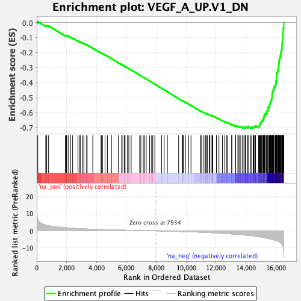

| | | Dataset | DE_genes2 |
| Phenotype | NoPhenotypeAvailable |
| Upregulated in class | na_neg |
| GeneSet | VEGF_A_UP.V1_DN |
| Enrichment Score (ES) | -0.7046374 |
| Normalized Enrichment Score (NES) | -2.37965 |
| Nominal p-value | 0.0 |
| FDR q-value | 0.0 |
| FWER p-Value | 0.0 |
Table: GSEA Results Summary

Fig 1: Enrichment plot: VEGF_A_UP.V1_DN
Profile of the Running ES Score & Positions of GeneSet Members on the Rank Ordered List
| PROBE | GENE SYMBOL | GENE_TITLE | RANK IN GENE LIST | RANK METRIC SCORE | RUNNING ES | CORE ENRICHMENT | | 1 | CDC42EP2 | | | 70 | 6.810 | 0.0067 | No |
| 2 | BAK1 | | | 604 | 3.398 | -0.0204 | No |
| 3 | TGFBI | | | 668 | 3.267 | -0.0190 | No |
| 4 | VEGFC | | | 793 | 3.057 | -0.0217 | No |
| 5 | SAT1 | | | 1922 | 1.814 | -0.0877 | No |
| 6 | CYB561D2 | | | 1960 | 1.785 | -0.0871 | No |
| 7 | B4GALT5 | | | 1995 | 1.759 | -0.0864 | No |
| 8 | TMEM259 | | | 2104 | 1.680 | -0.0903 | No |
| 9 | GATA6 | | | 2262 | 1.581 | -0.0973 | No |
| 10 | LRRC17 | | | 2403 | 1.491 | -0.1035 | No |
| 11 | SETBP1 | | | 2761 | 1.305 | -0.1232 | No |
| 12 | MAFK | | | 2885 | 1.249 | -0.1287 | No |
| 13 | FLT1 | | | 2911 | 1.233 | -0.1282 | No |
| 14 | ACE | | | 3083 | 1.162 | -0.1368 | No |
| 15 | TLE3 | | | 3153 | 1.131 | -0.1392 | No |
| 16 | GPR37 | | | 3340 | 1.061 | -0.1489 | No |
| 17 | SERPINB2 | | | 3370 | 1.049 | -0.1490 | No |
| 18 | GABBR2 | | | 3750 | 0.914 | -0.1707 | No |
| 19 | MMP14 | | | 4304 | 0.748 | -0.2033 | No |
| 20 | RND3 | | | 4335 | 0.739 | -0.2039 | No |
| 21 | SULT1B1 | | | 4400 | 0.721 | -0.2067 | No |
| 22 | ADTRP | | | 4571 | 0.669 | -0.2160 | No |
| 23 | TSPAN8 | | | 4729 | 0.631 | -0.2246 | No |
| 24 | AMPH | | | 5003 | 0.570 | -0.2404 | No |
| 25 | SLC7A2 | | | 5461 | 0.458 | -0.2676 | No |
| 26 | ITGB3 | | | 5687 | 0.408 | -0.2807 | No |
| 27 | UGP2 | | | 5714 | 0.402 | -0.2816 | No |
| 28 | RDH11 | | | 5855 | 0.374 | -0.2896 | No |
| 29 | ROM1 | | | 5910 | 0.363 | -0.2923 | No |
| 30 | RGS4 | | | 6068 | 0.333 | -0.3014 | No |
| 31 | ATP8B3 | | | 6162 | 0.313 | -0.3066 | No |
| 32 | CEP131 | | | 6318 | 0.283 | -0.3156 | No |
| 33 | ITGA2 | | | 6887 | 0.173 | -0.3500 | No |
| 34 | PTPRE | | | 6964 | 0.161 | -0.3544 | No |
| 35 | OSTF1 | | | 7128 | 0.129 | -0.3642 | No |
| 36 | ZNF117 | | | 7201 | 0.116 | -0.3684 | No |
| 37 | INHBB | | | 7323 | 0.093 | -0.3757 | No |
| 38 | ZNF124 | | | 7555 | 0.055 | -0.3897 | No |
| 39 | ARMC6 | | | 7687 | 0.035 | -0.3976 | No |
| 40 | SPTLC2 | | | 7763 | 0.022 | -0.4022 | No |
| 41 | MFAP3 | | | 7902 | 0.004 | -0.4106 | No |
| 42 | ZNF253 | | | 8354 | -0.067 | -0.4381 | No |
| 43 | FABP4 | | | 8523 | -0.097 | -0.4482 | No |
| 44 | NR2F1 | | | 8741 | -0.140 | -0.4613 | No |
| 45 | POP5 | | | 9495 | -0.312 | -0.5068 | No |
| 46 | TRMU | | | 9730 | -0.377 | -0.5205 | No |
| 47 | UAP1 | | | 9758 | -0.388 | -0.5215 | No |
| 48 | UCHL3 | | | 9812 | -0.403 | -0.5241 | No |
| 49 | IL6 | | | 9946 | -0.445 | -0.5316 | No |
| 50 | PSD3 | | | 10153 | -0.510 | -0.5433 | No |
| 51 | PCDH7 | | | 10320 | -0.560 | -0.5526 | No |
| 52 | AASS | | | 10956 | -0.785 | -0.5901 | No |
| 53 | RRP12 | | | 11000 | -0.801 | -0.5915 | No |
| 54 | NOC2L | | | 11132 | -0.853 | -0.5981 | No |
| 55 | ATIC | | | 11258 | -0.905 | -0.6043 | No |
| 56 | BCL10 | | | 11309 | -0.929 | -0.6059 | No |
| 57 | CCDC86 | | | 11347 | -0.948 | -0.6066 | No |
| 58 | IL1RL1 | | | 11425 | -0.979 | -0.6097 | No |
| 59 | PGAP1 | | | 11548 | -1.028 | -0.6155 | No |
| 60 | CBL | | | 11575 | -1.037 | -0.6155 | No |
| 61 | ANGPT2 | | | 11673 | -1.077 | -0.6197 | No |
| 62 | HIRA | | | 11750 | -1.109 | -0.6225 | No |
| 63 | USP13 | | | 11753 | -1.110 | -0.6208 | No |
| 64 | STEAP1 | | | 11776 | -1.118 | -0.6204 | No |
| 65 | RAP1A | | | 12021 | -1.232 | -0.6333 | No |
| 66 | MT1X | | | 12189 | -1.322 | -0.6414 | No |
| 67 | PNO1 | | | 12426 | -1.437 | -0.6535 | No |
| 68 | TRIM25 | | | 12582 | -1.525 | -0.6605 | No |
| 69 | CCNE1 | | | 12690 | -1.585 | -0.6645 | No |
| 70 | KLF9 | | | 12742 | -1.609 | -0.6651 | No |
| 71 | KIF22 | | | 13043 | -1.792 | -0.6805 | No |
| 72 | PRKACB | | | 13051 | -1.800 | -0.6780 | No |
| 73 | MBD4 | | | 13286 | -1.948 | -0.6892 | No |
| 74 | ADAM9 | | | 13296 | -1.951 | -0.6866 | No |
| 75 | EIF2S3 | | | 13456 | -2.072 | -0.6930 | No |
| 76 | POP1 | | | 13485 | -2.093 | -0.6913 | No |
| 77 | MEST | | | 13579 | -2.149 | -0.6936 | No |
| 78 | NUP155 | | | 13614 | -2.172 | -0.6922 | No |
| 79 | RASA2 | | | 13748 | -2.282 | -0.6966 | No |
| 80 | MAP3K7 | | | 13862 | -2.379 | -0.6997 | No |
| 81 | SLC30A9 | | | 13944 | -2.451 | -0.7007 | Yes |
| 82 | RP2 | | | 13959 | -2.466 | -0.6976 | Yes |
| 83 | DHFR | | | 13968 | -2.471 | -0.6941 | Yes |
| 84 | IPO5 | | | 14124 | -2.617 | -0.6993 | Yes |
| 85 | PTPRD | | | 14127 | -2.620 | -0.6952 | Yes |
| 86 | SEL1L | | | 14134 | -2.628 | -0.6914 | Yes |
| 87 | RRS1 | | | 14305 | -2.785 | -0.6973 | Yes |
| 88 | LRRFIP1 | | | 14379 | -2.864 | -0.6971 | Yes |
| 89 | ASPH | | | 14481 | -2.970 | -0.6985 | Yes |
| 90 | MPHOSPH6 | | | 14521 | -3.007 | -0.6960 | Yes |
| 91 | CRYZ | | | 14546 | -3.041 | -0.6926 | Yes |
| 92 | CDC27 | | | 14637 | -3.170 | -0.6930 | Yes |
| 93 | RGS5 | | | 14640 | -3.175 | -0.6880 | Yes |
| 94 | PHKA1 | | | 14837 | -3.408 | -0.6945 | Yes |
| 95 | C5orf30 | | | 14877 | -3.472 | -0.6913 | Yes |
| 96 | YES1 | | | 14904 | -3.508 | -0.6872 | Yes |
| 97 | MCM4 | | | 14906 | -3.510 | -0.6816 | Yes |
| 98 | AMD1 | | | 14940 | -3.564 | -0.6779 | Yes |
| 99 | CSE1L | | | 14944 | -3.568 | -0.6723 | Yes |
| 100 | EPM2AIP1 | | | 14971 | -3.601 | -0.6681 | Yes |
| 101 | CCNH | | | 15015 | -3.664 | -0.6648 | Yes |
| 102 | PLK4 | | | 15029 | -3.687 | -0.6597 | Yes |
| 103 | CEP170 | | | 15061 | -3.736 | -0.6556 | Yes |
| 104 | CKS2 | | | 15086 | -3.767 | -0.6510 | Yes |
| 105 | NUP50 | | | 15151 | -3.842 | -0.6487 | Yes |
| 106 | MYO5A | | | 15158 | -3.859 | -0.6428 | Yes |
| 107 | UFL1 | | | 15169 | -3.880 | -0.6372 | Yes |
| 108 | RGS2 | | | 15188 | -3.901 | -0.6320 | Yes |
| 109 | MAP1B | | | 15204 | -3.921 | -0.6266 | Yes |
| 110 | RNF6 | | | 15218 | -3.942 | -0.6210 | Yes |
| 111 | MAPK6 | | | 15249 | -4.002 | -0.6164 | Yes |
| 112 | ATP13A3 | | | 15255 | -4.031 | -0.6102 | Yes |
| 113 | SPAG5 | | | 15339 | -4.181 | -0.6086 | Yes |
| 114 | DLEU1 | | | 15374 | -4.250 | -0.6038 | Yes |
| 115 | NCOA3 | | | 15401 | -4.298 | -0.5985 | Yes |
| 116 | DNAJC13 | | | 15407 | -4.312 | -0.5918 | Yes |
| 117 | MRPL19 | | | 15422 | -4.347 | -0.5857 | Yes |
| 118 | TRAPPC8 | | | 15475 | -4.438 | -0.5817 | Yes |
| 119 | DHX29 | | | 15476 | -4.444 | -0.5745 | Yes |
| 120 | VRK1 | | | 15477 | -4.445 | -0.5674 | Yes |
| 121 | ARHGAP29 | | | 15498 | -4.475 | -0.5614 | Yes |
| 122 | CHM | | | 15562 | -4.616 | -0.5578 | Yes |
| 123 | NEK7 | | | 15567 | -4.627 | -0.5506 | Yes |
| 124 | TWF1 | | | 15581 | -4.658 | -0.5439 | Yes |
| 125 | PAPOLA | | | 15608 | -4.738 | -0.5378 | Yes |
| 126 | MDN1 | | | 15641 | -4.793 | -0.5320 | Yes |
| 127 | CCNB1 | | | 15643 | -4.796 | -0.5244 | Yes |
| 128 | TTC37 | | | 15697 | -4.908 | -0.5197 | Yes |
| 129 | RRM2 | | | 15702 | -4.911 | -0.5120 | Yes |
| 130 | SACS | | | 15729 | -4.959 | -0.5056 | Yes |
| 131 | BIRC5 | | | 15741 | -4.998 | -0.4982 | Yes |
| 132 | BAZ1A | | | 15747 | -5.005 | -0.4905 | Yes |
| 133 | AIMP1 | | | 15749 | -5.009 | -0.4825 | Yes |
| 134 | CTNNAL1 | | | 15758 | -5.029 | -0.4748 | Yes |
| 135 | RPGR | | | 15762 | -5.035 | -0.4669 | Yes |
| 136 | DDX21 | | | 15775 | -5.062 | -0.4595 | Yes |
| 137 | RFC4 | | | 15807 | -5.149 | -0.4531 | Yes |
| 138 | CCNB2 | | | 15832 | -5.225 | -0.4461 | Yes |
| 139 | BCLAF1 | | | 15852 | -5.268 | -0.4388 | Yes |
| 140 | DKK1 | | | 15876 | -5.321 | -0.4316 | Yes |
| 141 | SCAF11 | | | 15893 | -5.377 | -0.4239 | Yes |
| 142 | ZC3H15 | | | 15973 | -5.565 | -0.4198 | Yes |
| 143 | PRMT3 | | | 15985 | -5.624 | -0.4114 | Yes |
| 144 | DBF4 | | | 16002 | -5.664 | -0.4033 | Yes |
| 145 | XRCC4 | | | 16009 | -5.697 | -0.3944 | Yes |
| 146 | NBN | | | 16021 | -5.731 | -0.3859 | Yes |
| 147 | NUDT21 | | | 16036 | -5.793 | -0.3774 | Yes |
| 148 | LRP8 | | | 16042 | -5.803 | -0.3683 | Yes |
| 149 | MAD2L1 | | | 16043 | -5.805 | -0.3590 | Yes |
| 150 | SLC4A7 | | | 16056 | -5.834 | -0.3503 | Yes |
| 151 | ORC2 | | | 16058 | -5.843 | -0.3410 | Yes |
| 152 | TMPO | | | 16067 | -5.864 | -0.3320 | Yes |
| 153 | RECQL | | | 16118 | -5.999 | -0.3254 | Yes |
| 154 | BUB1 | | | 16142 | -6.084 | -0.3170 | Yes |
| 155 | TFAM | | | 16168 | -6.208 | -0.3085 | Yes |
| 156 | LMNB1 | | | 16178 | -6.259 | -0.2990 | Yes |
| 157 | RAB3B | | | 16179 | -6.260 | -0.2889 | Yes |
| 158 | ACADM | | | 16190 | -6.296 | -0.2793 | Yes |
| 159 | CACNA2D1 | | | 16209 | -6.362 | -0.2702 | Yes |
| 160 | PPIG | | | 16215 | -6.408 | -0.2602 | Yes |
| 161 | NRP1 | | | 16220 | -6.435 | -0.2500 | Yes |
| 162 | PRPF40A | | | 16254 | -6.575 | -0.2414 | Yes |
| 163 | CDC45 | | | 16272 | -6.693 | -0.2317 | Yes |
| 164 | RIF1 | | | 16279 | -6.762 | -0.2212 | Yes |
| 165 | BUB1B | | | 16335 | -7.102 | -0.2131 | Yes |
| 166 | MKLN1 | | | 16338 | -7.118 | -0.2017 | Yes |
| 167 | KIF23 | | | 16347 | -7.203 | -0.1906 | Yes |
| 168 | EXO1 | | | 16387 | -7.570 | -0.1808 | Yes |
| 169 | CEBPZ | | | 16401 | -7.771 | -0.1691 | Yes |
| 170 | KIF11 | | | 16409 | -7.860 | -0.1568 | Yes |
| 171 | FKBP5 | | | 16412 | -7.889 | -0.1442 | Yes |
| 172 | SMC4 | | | 16421 | -7.981 | -0.1318 | Yes |
| 173 | CENPA | | | 16438 | -8.139 | -0.1197 | Yes |
| 174 | TTK | | | 16444 | -8.189 | -0.1068 | Yes |
| 175 | PNN | | | 16460 | -8.504 | -0.0940 | Yes |
| 176 | CDKN3 | | | 16463 | -8.532 | -0.0804 | Yes |
| 177 | THOC2 | | | 16468 | -8.629 | -0.0667 | Yes |
| 178 | DLGAP5 | | | 16482 | -9.145 | -0.0528 | Yes |
| 179 | CENPE | | | 16501 | -10.010 | -0.0377 | Yes |
| 180 | NDC80 | | | 16527 | -12.233 | -0.0195 | Yes |
| 181 | HMMR | | | 16528 | -12.240 | 0.0002 | Yes |
Table: GSEA details [plain text format]
Fig 2: VEGF_A_UP.V1_DN: Random ES distribution
Gene set null distribution of ES for VEGF_A_UP.V1_DN